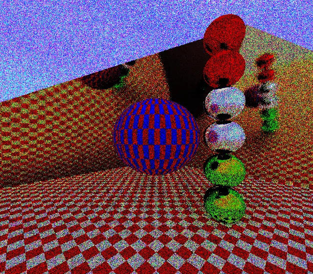
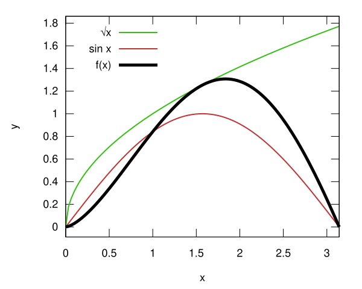
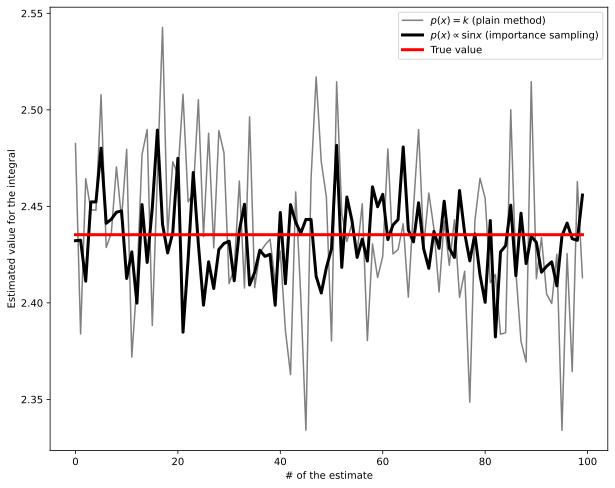
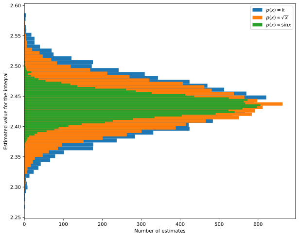
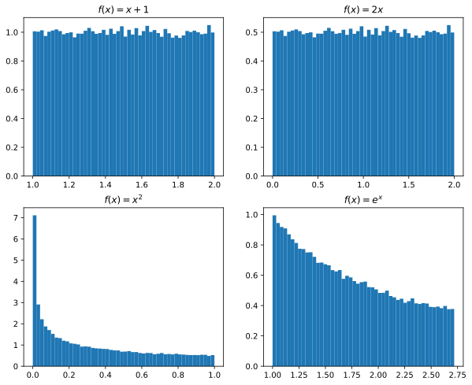
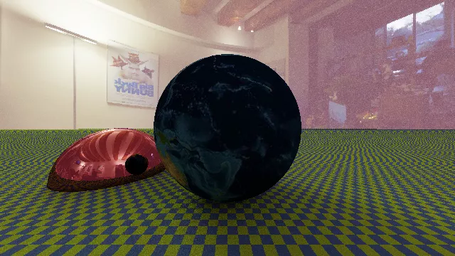

Lesson 10
Calcolo numerico per la generazione di immagini fotorealistiche
Maurizio Tomasi maurizio.tomasi@unimi.it
Path tracing
Rendering Equation
To solve the rendering equation we need to trace the path of light rays in three-dimensional space and solve the rendering equation:
\begin{aligned} L(x \rightarrow \Theta) = &L_e(x \rightarrow \Theta) +\\ &\int_{4\pi} f_r(x, \Psi \rightarrow \Theta)\,L(x \leftarrow \Psi)\,\cos(N_x, \Psi)\,\mathrm{d}\omega_\Psi. \end{aligned}
There are various ways to solve the equation, but we will implement only two: path tracing and point-light tracing.
Path Tracing
It is conceptually the simplest method to implement.
It is able to produce unbiased solutions (without systematic effects).
It is computationally very inefficient.
There are many techniques to make it faster; we will implement only the simplest ones (it is not the main objective of the course!).
Path Tracing
The most complex term of the rendering equation is the integral
\begin{aligned} L(x \rightarrow \Theta) = &L_e(x \rightarrow \Theta) +\\ &\int_{2\pi} f_r(x, \Psi \rightarrow \Theta)\,L(x \leftarrow \Psi)\,\cos(N_x, \Psi)\,\mathrm{d}\omega_\Psi, \end{aligned}
which for simplicity we consider applied to an opaque and not transparent material (4π→2π).
As we have seen, it is actually a multiple integral, over an arbitrary number of dimensions: in these cases, integrals are efficiently estimated using Monte Carlo (MC) methods.
Path Tracing and MC
The path tracing algorithm is as follows:
- For each pixel on the screen, a ray is projected through the pixel.
- When a ray hits a surface at a point P, the emission L_e at point P is evaluated.
- The integral at point P is evaluated using the Monte Carlo method, sampling the solid angle with N new secondary rays that depart from P along random directions.
- For each secondary ray, the process is repeated recursively.
The algorithm allows to obtain an exact solution for the rendering equation, although at the cost of a large computation time.
Probability and Monte Carlo
Probability Review
Given a variable X, the cumulative distribution function (CDF) P(x) is the probability that X is less than a fixed value x:
P(x) = \mathrm{Pr}\{X \leq x\}
The probability density function (PDF) p(x) is the derivative of P(x), and is such that p(x)\,\mathrm{d}x is the probability that X is in the interval [x, x + \mathrm{d}x]:
p(x) = \frac{\mathrm{d}P(x)}{\mathrm{d}x}.
Probability Review
Since \lim_{x \rightarrow -\infty} P(x) = 0 and \lim_{x \rightarrow +\infty} P(x) = 1, it follows that
\int_{\mathbb{R}} p(x)\,\mathrm{d}x = 1.
From the definition it follows that the probability that X falls in the interval [a, b] is
P\bigl(X \in [a, b]\bigr) = P(b) - P(a) = \int_a^b p(x)\,\mathrm{d}x.
Probability Review
The expected value of a function f(X) dependent on the random variable X with PDF p(x) is defined as
E_p[f] = \int_\mathbb{R}\,f(x)\,p(x)\,\mathrm{d}x.
The variance of f(X) with respect to p is defined as
V_p[f] = E_p\left[\bigl(f(x) - E_p[f]\bigr)^2\right] = \int_\mathbb{R}\,\bigl(f(x) - E_p[f]\bigr)^2\,p(x)\,\mathrm{d}x.
The standard deviation is defined as \sqrt{V_p[f]}.
Probability Review
E_p is a linear operator:
E_p[a f(x)] = a E_p[f(x)], \quad E[f(x) + g(x)] = E[f(x)] + E[g(x)].
For the variance (which is not linear!) it holds that
V_p[a f(x)] = a^2 V_p[f(x)].
From these properties it follows that
V_p[f] = E_p\bigl[f^2(x)\bigr] - E_p\bigl[f(x)\bigr]^2.
Monte Carlo Integration
Monte Carlo Integration
In the path tracing algorithm, the integrals that appear in the rendering equation must be calculated
It is a recursive integral, therefore of infinite dimension: Monte Carlo methods are necessary.
In Monte Carlo methods, the variance must be carefully controlled, because if it is excessive the quality of the image suffers.

If the variance in the estimation of the integrals is excessive, a grainy image is created.
Variance in MC methods
Suppose we want to numerically calculate the value of the integral
I = \int_a^b f(x)\,\mathrm{d}x
The mean method provides a simple approximation F_N for I:
I = \int_a^b f(x)\,\mathrm{d}x \approx F_N \equiv (b - a) \cdot \left[\frac1N \sum_{i=1}^N f(X_i)\right],
where X_i are N random numbers with constant PDF p(x) = 1 / (b - a).
\begin{aligned} E_p[F_N] &= E_p\left[\frac{b - a}N \sum_{i = 1}^N f(x_i)\right] =\\ &= \frac{b - a}N \sum_{i = 1}^N E_p[f(x_i)] =\\ &= \frac{b - a}N \sum_{i = 1}^N \int_{\mathbb{R}} f(x)\,p(x)\,\mathrm{d}x = \\ &= \frac1N \sum_{i = 1}^N \int_a^b f(x)\,\mathrm{d}x = \int_a^b f(x)\,\mathrm{d}x = I. \end{aligned}
Importance Sampling
It is easy to show that if X follows an arbitrary distribution p(x), an estimator of the integral is
F_N = \frac1N \sum_{i = 1}^N \frac{f(X_i)}{p(X_i)},
provided that p(x) > 0 when f(x) \not= 0.
If p(x) is chosen well, it is possible to increase the accuracy of the estimate. In the case where f(x) = k \cdot p(x), in fact, the term in the sum is constant (k) and equal to the integral. Only N = 1 is needed to estimate it!
Example
Let’s see a practical example in the calculation of the integral of f(x) = \sqrt{x}\,\sin x:
\int_0^\pi f(x)\,\mathrm{d}x = \int_0^\pi \sqrt{x}\,\sin x\,\mathrm{d}x \approx 2.435.
To use importance sampling we must decide which p(x) to use:
- p(x) \propto \sqrt{x}\,\sin x? (No, this is precisely the integrand!)
- p(x) \propto \sqrt{x}?
- p(x) \propto \sin x?
To decide, it is always good to plot the integrand f(x).
This is the graph of f(x) and our hypotheses for p(x):

Clearly the best option is p(x) \propto \sin x, because its shape resembles that of f(x).
Example
Normalizing p(x) \propto \sin x over the integration domain, we obtain
p(x) = \frac{\chi_{[0, \pi]}(x)}2 \sin x.
We must now obtain random numbers X_i that follow this distribution. We use the inverse transform sampling method, passing from the PDF p(x) to the CDF P(x) = \mathrm{Pr}\{X \leq x\}:
P(x) = \int_{-\infty}^x p(x')\,\mathrm{d}x' = \frac12(1 - \cos x)\quad\text{ for }x \in [0, \pi].
Example
Since P(x) = \frac12 (1 - \cos x), then
P^{-1}(y) = \arccos(1 - 2y).
Therefore, if Y_i is uniformly distributed over [0, 1], then P^{-1}(Y_i) = X_i is distributed according to p(x). (We will see shortly how to rigorously demonstrate this).
We now implement a Python code that calculates the integral using the mean method without and with importance sampling, to actually verify what the advantage is.
import numpy as np, matplotlib.pylab as plt
def estimate(f, n): # Plain mean method
x = np.random.rand(n) * np.pi # Random numbers in the range [0, π]
return np.pi * np.mean(f(x))
def estimate_importance(f, n): # Mean method with importance sampling
x = np.random.rand(n) # Uniform random numbers in the range [0, 1]
xp = np.arccos(1 - 2 * x) # These are distributed as p(x) = 1/2 sin(x)
return np.mean(f(xp) / (0.5 * np.sin(xp)))
# Estimate many times the same integral using the two methods
f = lambda x: np.sqrt(x) * np.sin(x)
est1 = [estimate(f, 1000) for i in range(100)]
est2 = [estimate_importance(f, 1000) for i in range(len(est1))]
fig = plt.figure(figsize=(10, 8))
plt.plot(est1, label='$p(x) = k$ (plain method)', color="gray")
plt.plot(est2, label='$p(x) \propto \sin x$ (importance sampling)',
color="black", linewidth=3)
plt.plot(2.435321164 * np.ones(len(est1)), label="True value",
color="red", linewidth=3)
plt.xlabel("# of the estimate")
plt.ylabel("Estimated value for the integral")
plt.legend()
Another option
What would change if we pick p(x) \propto \sqrt x? The following Python code implements importance sampling in this case:
This time, we will use a histogram to show how the MC samples are distributed around the true value.
# The first part of the script is the same as in the previous example
# …
def estimate_importance2(f, n):
x = np.random.rand(n)
# These are distributed as p(x) = 3/(2π^3/2) * √x
xp = np.pi * x**(2/3)
return np.mean(f(xp) / (3 / (2 * np.pi ** 1.5) * np.sqrt(xp)))
est0 = [estimate(f, 1000) for i in range(10_000)]
est1 = [estimate_importance1(f, 1000) for i in range(10_000)]
est2 = [estimate_importance2(f, 1000) for i in range(10_000)]
fig = plt.figure(figsize=(10, 8))
plt.hist(est0, bins=50, label="$p(x) = k$", orientation="horizontal")
plt.hist(est2, bins=50, label="$p(x) \propto \sqrt{x}$", orientation="horizontal")
plt.hist(est1, bins=50, label="$p(x) \propto \sin x$", orientation="horizontal")
plt.legend()
plt.xlabel("Number of estimates")
plt.ylabel("Estimated value for the integral")
If we choose the way we integrate carefully, we can reduce the variance in the pixels of the image produced by our code.
Implementing Path Tracing
Application to Ray Tracing
Let’s consider the rendering equation:
\begin{aligned} L(x \rightarrow \Theta) = &L_e(x \rightarrow \Theta) +\\ &\int_{2\pi} f_r(x, \Psi \rightarrow \Theta)\,L(x \leftarrow \Psi)\,\cos(N_x, \Psi)\,\mathrm{d}\omega_\Psi. \end{aligned}
The integral is over two dimensions (\mathrm{d}\omega is a solid angle), so it makes sense to use the mean value method.
Using the Mean Value Method
The integral can be estimated with this procedure:
- Choose N random directions \Psi_i (or equivalently infinitesimal solid angles \mathrm{d} \omega_i);
- Evaluate the integrand along the N directions, obtaining N estimates;
- Apply the mean value method by calculating the average of all the N estimates.
However, there are two complications:
- How do we choose the «random directions» \Psi_i? Here we are in 2D, not 1D!
- How do we evaluate the integrand, since it is recursive?
Random Directions
We have always indicated directions with the angles θ and φ, related to Cartesian coordinates through spherical coordinates with r = 1:
x = \sin\theta\cos\varphi, \quad y = \sin\theta\sin\varphi, \quad z = \cos\theta.
Even if we wanted to apply the mean value method without importance sampling, we should have a constant probability p(\omega). But this does not coincide with requiring that p(\theta) and p(\varphi) be constant!
We must choose the random directions so that p(\omega) is constant, and to do this we must understand how changes of variables act on probability distributions in n dimensions.
1D Probability Distributions
If the random variables X_1, X_2, \ldots have a distribution p_X(x), and if we define an invertible transformation Y = f(X), for which there exists an f^{-1} such that X = f^{-1}(Y), we ask ourselves: what is the distribution p_Y(y) of the Y_i?
There are many ways to calculate p_Y. The simplest is to directly calculate the CDF of the Y:
P_Y(y) = \mathrm{Pr}(Y \leq y) = \mathrm{Pr}\bigl(f(X) \leq y\bigr).
At this point we can apply f^{-1} to both sides of the inequality f(X) \leq y, but with a caveat.
1D Probability Distributions
If f^{-1} is an increasing function, it holds that
f(X) \leq y\quad\Rightarrow\quad X \leq f^{-1}(y).
If it is decreasing instead, it holds that
f(X) \leq y\quad\Rightarrow\quad X \geq f^{-1}(y).
Let’s first see the case where f^{-1} is increasing.
Case of Increasing Inverse
In this case
P_Y(y) = \mathrm{Pr}\bigl(f(X) \leq y\bigr) = \mathrm{Pr}\bigl(X \leq f^{-1}(y)\bigr) = P_X\bigl(f^{-1}(y)\bigr).
From the CDF P_Y(y) we can move to the PDF by applying the formula for the derivative of a composite function:
p_Y(y) = P_Y'(y) = \frac{\mathrm{d} P_X\bigl(f^{-1}(y)\bigr)}{\mathrm{d}y} = p_X\bigl(f^{-1}(y)\bigr)\cdot \frac{\mathrm{d}f^{-1}}{\mathrm{d}y}(y).
Case of Decreasing Inverse
If f^{-1} is a decreasing function, then it holds that
P_Y(y) = \mathrm{Pr}\bigl(X \geq f^{-1}(y)\bigr) = 1 - \mathrm{Pr}\bigl(X \leq f^{-1}(y)\bigr) = 1 - P_X\bigl(f^{-1}(y)\bigr).
Applying the derivative again as in the previous case, we get
p_Y(y) = P_Y'(y) = \frac{\mathrm{d} P_X\bigl(f^{-1}(y)\bigr)}{\mathrm{d}y} = -p_X\bigl(f^{-1}(y)\bigr)\cdot \frac{\mathrm{d}f^{-1}}{\mathrm{d}y}(y).
Note, however, that the derivative of f^{-1} is negative in this case.
General Case
Combining the two cases, we get
p_Y(y) = p_X\bigl(f^{-1}(y)\bigr)\cdot \left|\frac{\mathrm{d}f^{-1}}{\mathrm{d}y}(y)\right|,
which is correct because p_Y(y) must always be positive. This relationship also preserves the normalization of p_Y.
A mnemonic trick to remember it starts from the fact that p_Y(y)\,\left|\mathrm{d}y\right| = p_X(x)\,\left|\mathrm{d}x\right| must hold: from here the above relationship is easily derived.
Let’s see some practical examples.
Examples
Suppose the variables X are uniformly distributed on [0, 1], so that p_X(x) = \chi_{[0, 1]}(x), and suppose that Y = f(X). Consequently:
If f(X) = X + 1 and f^{-1}(Y) = Y - 1, then p_Y(y) = \chi_{[1, 2]}(y).
If f(X) = 2X and f^{-1}(Y) = Y / 2, then p_Y(y) = \frac12 \chi_{[0, 2]}(y).
If f(X) = X^2 and f^{-1}(Y) = \sqrt{Y}, then p_Y(y) = \frac{\chi_{[0, 1]}(y)}{2\sqrt{y}}.
If f(X) = e^{X - 1} and f^{-1}(Y) = 1 + \log Y, then p_Y(y) = \frac{\chi_{[1/e, 1]}(y)}y.
Verification in Python
You can numerically verify the correctness of the results in the previous slide with this Python program, which extracts 100,000 random numbers, transforms them, and plots their histogram:
import numpy as np
import matplotlib.pylab as plt
curplot = 1
def plot_distribution(numbers, title, fun):
global curplot
plt.subplot(2, 2, curplot)
plt.title(title)
plt.hist(fun(numbers), bins=50, density=True)
curplot += 1
numbers = np.random.rand(100_000)
fig = plt.figure(figsize=(10, 8))
plot_distribution(numbers, "$f(x) = x + 1$", lambda x: x + 1)
plot_distribution(numbers, "$f(x) = 2x$", lambda x: 2 * x)
plot_distribution(numbers, "$f(x) = x^2$", lambda x: x**2)
plot_distribution(numbers, "$f(x) = e^x$", lambda x: np.exp(x))
plt.savefig("distributions-python.svg", bbox_inches="tight")
2D Probability Distributions
Sampling solid angles is more complex because it requires drawing pairs of random numbers.
Fortunately, the math is similar to the 1D case. Since integrals and changes of variables are involved, the Jacobian determinant appears in the expression:
p_Y(\vec y) = p_X\bigl(\vec{f}^{-1}(\vec y)\bigr)\cdot\left|\frac1{\det J(y)}\right|.
Polar Coordinates
Suppose we draw two numbers r, \theta with probability p(r, \theta). If r, \theta are the polar coordinates of a point on the plane, then the point has Cartesian coordinates
x = r \cos \theta, \quad y = r \sin \theta.
The determinant of the Jacobian matrix is
\det J = \det\begin{pmatrix} \partial_r x& \partial_\theta x\\ \partial_r y& \partial_\theta y \end{pmatrix} = \det\begin{pmatrix} \cos\theta& -r\sin\theta\\ \sin\theta& r\cos\theta \end{pmatrix} = r,
and consequently p(x, y) = p(r, \theta) / r, or p(r, \theta) = r\cdot p(x, y).
Spherical Coordinates
In the case of spherical coordinates, we have
x = r \sin\theta\cos\varphi, \quad y = r \sin\theta\sin\varphi, \quad z = r \cos\theta,
and we find that \det J = r^2 \sin\theta.
Consequently, the following relation holds
p(r, \theta, \varphi) = r^2 \sin\theta \cdot p(x, y, z),
which, as in the polar case, can be used to derive p(x, y, z) from p(r, \theta, \varphi) and vice versa.
Sampling the Hemisphere
Let’s return to the problem of drawing random directions on the 2\pi\,\text{steradian} hemisphere. This is equivalent to drawing pairs \theta, \varphi such that the probability is uniform.
Since random number generators allow us to draw only one number at a time, we must follow a procedure to derive first one and then the other.
To explain the procedure, we need two new concepts: the marginal probability density function and the conditional probability density function.
Two New Definitions
We define the marginal probability density function p(x):
p(x) = \int_\mathbb{R} p(x, y)\,\mathrm{d}y,
which is the probability of obtaining x independently of the value of y.
The conditional probability density function p(y \mid x) is the probability of obtaining y given that a specific value x has been obtained:
p(y \mid x) = \frac{p(x, y)}{p(x)}\quad\Longleftrightarrow\quad p(x, y) = p(x) p(y \mid x).
Example: «Cornell Box»

Schema of the «Cornell Box»

Example
Let’s consider a simple example where x and y are discrete (Boolean) variables to understand the two definitions.
Suppose the two variables x and y represent the following:
- x \in \{T, F\} determines whether a ray started from the lamp on the ceiling;
- y \in \{T, F\} determines whether a ray hits the cube on the right.
Consequently, p(T, T) is the probability that a ray starts from the lamp and reaches the right cube, p(F, T) is the probability that a ray hits the same cube but did not start from the lamp.
Example
The marginal density p(x) = \int p(x, y)\,\mathrm{d}y in our example is interpreted as follows: p(T) is the probability that a ray started from the lamp on the ceiling, regardless of where it is directed.
The conditional density p(y \mid x) is such that p(y = T \mid x = T) tells us the probability that a ray starting from the lamp (x = T) hits the cube (y = T).
The conditional density p(x \mid y) (with x and y swapped) is such that p(x = T \mid y = T) tells us the probability that a ray that hit the cube (y = T) started from the lamp (x = T).
Application to Directions
Now let’s see how to draw a random direction on the 2\pi hemisphere using the concepts we just learned.
The algorithm is simple:
- Calculate the marginal density of one of the two variables, for example \theta;
- Draw a random value for \theta according to that marginal density: this is easy because we have reduced it to a 1D case;
- Once \theta is known, use the conditional density to estimate the probability of obtaining \varphi given the particular \theta we just obtained;
- Draw \varphi following the distribution just obtained: here too we are in a one-dimensional case that is easy to handle!
Application to Directions
If on the hemisphere \mathcal{H}^2 we must have p(\omega) = c, then
\int_{\mathcal{H}^2} p(\omega)\,\mathrm{d}\omega = 1 \quad \Rightarrow \quad c\int_{\mathcal{H}^2}\mathrm{d}\omega = 1\quad\Rightarrow\quad c = \frac1{2\pi}.
Since p(\omega) = 1 / (2\pi) and \mathrm{d}\omega = \sin\theta\,\mathrm{d}\theta\,\mathrm{d}\varphi, then
p(\omega)\mathrm{d}\omega = p(\theta, \varphi)\,\mathrm{d}\theta\,\mathrm{d}\varphi\quad\Rightarrow\quad p(\theta, \varphi) = \frac{\sin\theta}{2\pi}.
PDF of θ and φ
The marginal density p(\theta) is given by
p(\theta) = \int_0^{2\pi} p(\theta, \varphi)\,\mathrm{d}\varphi = \int_0^{2\pi} \frac{\sin\theta}{2\pi}\,\mathrm{d}\varphi = \sin\theta.
The conditional density p(\varphi \mid \theta) is
p(\varphi \mid \theta) = \frac{p(\theta, \varphi)}{p(\theta)} = \frac{\sin\theta / 2\pi}{\sin\theta} = \frac1{2\pi}.
Thus, the conditional density function for \varphi is constant, which makes sense given the symmetry of the variable.
Sampling θ and φ
To sample \theta and \varphi we need their CDF. For \theta, it is
P_\theta(\theta) = \int_0^\theta p(\theta')\,\mathrm{d}\theta' = \int_0^\theta \sin\theta'\,\mathrm{d}\theta' = 1 - \cos\theta,
Its inverse provides the formula to sample \theta:
\theta = P_\theta^{-1}(X_1) = \arccos (1 - X_1) = \arccos X'_1,
where we employ the fact that both X_1 and 1 - X_1 are random numbers uniformly distributed over [0, 1]: this saves a subtraction.
Sampling θ and φ
For \varphi, we need the conditional cumulative probability P_\varphi(\varphi \mid \theta):
P_\varphi(\varphi \mid \theta) = \int_0^\varphi p(\varphi' \mid \theta)\,\mathrm{d}\varphi' = \int_0^\varphi \frac1{2\pi}\,\mathrm{d}\varphi' = \frac{\varphi}{2\pi}.
Thus, our sample for \varphi is just
\varphi = P_\varphi^{-1}(X_2) = 2\pi X_2
(a plain rescaling).
Random Directions
This Python code generates a uniform distribution of directions over the 2\pi solid angle:
import numpy as np
import matplotlib.pylab as plt
x1 = np.random.rand(1000)
x2 = np.random.rand(len(x1))
# Here is the transformation!
θ = np.arccos(x1)
φ = 2 * np.pi * x2
x = np.sin(θ) * np.cos(φ)
y = np.sin(θ) * np.sin(φ)
z = np.cos(θ)
fig = plt.figure()
ax = fig.add_subplot(projection='3d')
ax.scatter(x, y, z)
ax.set_zlim(-1, 1)
plt.savefig("uniform-density-random.svg", bbox_inches="tight")Phong Distribution
A more general distribution that we will need is the following:
p(\omega) = k \cos^n\theta,
with n an integer. (The form we obtained previously corresponds to the case n = 0).
Normalization is obtained in the usual way:
\int_{\mathcal{H}^2} k \cos^n\theta\,\sin\theta\,\mathrm{d}\theta\,\mathrm{d}\varphi = \frac{2\pi}{n + 1}\quad\Rightarrow\quad k = \frac{n + 1}{2\pi}.
Phong Distribution
The marginal density of \theta is
p(\theta) = (n + 1) \cos^n\theta\,\sin\theta.
The conditional density of \varphi is again a constant, as is evident from the symmetry of p(\omega):
p(\varphi \mid \theta) = \frac1{2\pi}.
Phong Distribution
Repeating the calculations we obtain
\begin{aligned} \theta &= \arccos\left[\bigl(1 - X_1\bigr)^{\frac1{n + 1}}\right] = \arccos\left[\bigl(X'_1\bigr)^{\frac1{n + 1}}\right],\\ \varphi &= 2\pi X_2, \end{aligned}
where again X_1 and X_2 are random numbers with a uniform distribution on [0, 1].
This distribution p(\theta, \varphi) is called the Phong distribution.
Example with n = 1
BRDF
Implementing a BRDF
To solve the rendering equation, we need to evaluate the term
f_r(x, \Psi \rightarrow \Theta),
which is a pure number that “weighs” the amount of radiation coming from direction \Psi and reflected towards \Theta.
However, since f_r depends on the frequency \lambda, it should actually be encoded as a function f_r = f_r(\lambda)…
…but due to the properties of the human eye, it is sufficient for f_r to return three values: a pure number for the R component, one for G, and one for B.
BRDF Characteristics
Conceptually, from a code perspective, it’s useful to consider the BRDF of a material as composed of two types of information:
- Those properties that depend on the angle of incidence of the light and the observer’s position;
- Those properties that do not depend on the direction, and which are identified under the collective name of pigment.
It is therefore convenient to define a
BRDFtype that contains aPigmentsubtype.
Pigment Types
The pigment does not determine the final appearance of the material because the greater or lesser glossiness/metallic nature/… are defined by the BRDF.
Pigments are usually used to represent the variability of a BRDF on the surface: under this hypothesis, what changes from point to point is not the entire BRDF, but only the pigment.
In computer graphics, various types of pigments are usually defined:
- Uniform (also called solid, who knows why).
- Checkered: very useful for debugging.
- Image (also called textured).
- Procedural (see chapter 5 of Shirley & Morley).
BRDF Form
The directional dependence of the BRDF depends both on the angle of incidence of the light with respect to the normal \hat n, and on the observer’s viewing angle, also with respect to \hat n.
We have already seen some types of BRDF in the first lesson:
In the exercises, we will implement BRDFs, along with a random number generator.
Example

In the scene, all surfaces are ideal diffuse surfaces, except for the red sphere, which implements a reflective BRDF. The environment is a sphere of very large radius whose material is based on an HDR file (using a textured pigment).